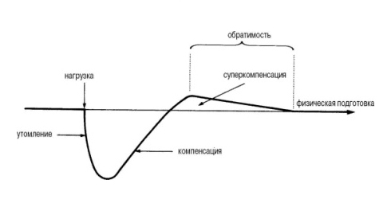

На этой неделе мы дадим всю необходимую информацию, для успешного самостоятельного составления программ тренировок, и сегодня мы хотим рассказать о различных тренировочных принципах и методах, которые можно закладывать в программы тренировок.
Основные принципы тренировок
1. Принцип индивидуальности
Каждый из нас обладает своей собственной способностью адаптироваться к тренировочным нагрузкам. Поэтому, за исключением монозиготных близнецов, у разных людей будет по-разному проходить адаптация к одной и той же тренировочной программе. Генетические различия — это фактор №1 для объяснения того, почему у одних людей наблюдаются значительные улучшения после занятий по данной программе тренировочных нагрузок, а у других после такой же программы улучшения минимальны или их вообще нет. И любая программа тренировок должна учитывать особенности занимающегося, а значит нет смысла брать чужие готовые программы из интернета, а тем более платить за них.
2. Принцип специфичности
Специфическая тренировочная нагрузка вызывает специфическую реакцию и адаптацию. Таким образом тренировочная нагрузка должна соответствовать уровню подготовки атлета и поставленным перед ним целям. Этот принцип очевиден, когда речь идет о представителях разных видов спорта (например у толкателя ядра будут совсем другие тренировки, нежели у пловца или марафонского бегуна). Для улучшения мышечной силы не следует акцентировать внимание на беге на длинные дистанции, в то же самое время как стайеру нет смысла уделять много внимания интенсивным интервальным тренировкам. Именно поэтому атлеты, тренирующиеся на развитие силы и мощности, например, тяжелоатлеты, характеризуются таким же уровнем аэробной выносливости, как и нетренированные люди. Согласно этому принципу программа тренировок должна обеспечивать нагрузку тех физиологических систем, которые играют основную роль для достижения желаемых результатов.
3. Принцип прогрессирующей нагрузки
Мы уже неоднократно говорили о том, как ваш организм реагирует на тренировки. Для него они являются стрессом и внешним раздражителем, поэтому он будет делать всё, для того, чтобы научиться максимально эффективно справляться с ним. Именно поэтому нельзя постоянно делать одно и то же. Со временем вы привыкаете к нагрузке и отдача от неё падает чуть ли не до нуля.
Запомните два ключевых понятия "перегрузка" и "прогрессивная нагрузка" - это основа любого вида тренировки и абсолютно все тренировочные программы должны включать эти два компонента. Например, чтобы увеличить мышечную силу, мышцы следует перегружать. Это означает, что нагрузка должна превышать обычную. Прогрессивная силовая тренировка подразумевает, что с увеличением силы мышц пропорционально большая величина сопротивления необходима для дальнейшего стимулирования увеличения их силы.
Как этого достичь? Увеличивайте интенсивность своих тренировок! Этого можно достигнуть разными способами, например уменьшив время отдыха между подходами, или увеличить количество повторений в упражнениях, или увеличив количество упражнений, или усложнив их и т.д. и т.п.
4. Принцип единства нагрузки и восстановления
Очевидно, что если вы регулярно не занимаетесь, то у вашего организма просто нет необходимости изменяться и адаптироваться. Это можно продемонстрировать на следующей иллюстрации, где уровень физической формы постепенно возвращается к дотренировочному состоянию. Чтобы тренировки были эффективными, необходимо понимать взаимосвязь между адаптацией, перегрузкой и обратимостью. Рост силовых показателей и мышц наступает вследствие правильного соотношения между нагрузкой и восстановлением.

Когда речь заходит об уровне нагрузки, следует всегда помнить о нескольких вещах. Во-первых, ваш организм с течением времени привыкает к той нагрузке, которую вы ему даете. Поэтому, если постоянно делать одно и то же на тренировках, то вначале физическая форма улучшится (до определенного уровня), но затем она на этом уровне и останется. Во-вторых, чрезмерная тренировочная нагрузка не позволит вам полноценно восстановиться, а проблемы с восстановлением имеют тенденцию к накоплению. Это происходит, если нагрузка все время слишком велика или производится слишком часто. Снижение спортивных результатов, вызванное неполной адаптацией, является одним из наиболее очевидных симптомов перетренированности спортсмена. В такой ситуации необходимо дать себе достаточное время на восстановление и либо прекратить тренировки, либо существенно снизить нагрузки.
5. Принцип непрерывности и обратимости

Этот принцип подразумевает построение своего тренировочного процесса таким образом, чтобы в наибольшей степени обеспечить преемственность положительного эффекта тренировочных занятий, исключить неоправданные перерывы между ними и свести к минимуму регресс тренированности.
После тренировки в период последующего за ней отдыха начинается процесс нормализации физической формы организма. Соответственно, следующая тренировка может прийтись либо на состояние физической формы ниже исходной, либо соответствующей исходной, либо более высокой, чем исходная (так называемое состояние суперкомпенсации). Непрерывность тренировочного процесса позволяет кумулятивно накапливать это состояние, постоянно повышая уровень нагрузки.
Повышение уровня нагрузки приводит через рост адаптации и гиперкомпенсации к более высоким уровням физической формы. В свою очередь, оно может достигаться различными способами, и ниже мы представляем список из 16 возможных методов.
Основные методы тренировок
1. Метод системы подходов
Для того чтобы максимально проработать каждую мышцу или группу мышц, нужно выполнить несколько подходов в нескольких разных упражнениях на конкретную группу мышц. В начале ПРОДВИНУТОГО блока мы уже рассказывали о том, как можно задействовать разные мышцы в разных упражнениях и смещать акценты. Для полноценной нагрузки группы мышц вам стоит использовать разные упражнения в рамках одной тренировки.
2. Метод шокирования мышц
Ваш организм адаптируется к однообразным упражнениям, поэтому будет эффективным добавлять время от времени в свою программу те упражнения, которые вы никогда не делали. Я более чем уверен, что таких в воркауте ещё полно. Это не только никогда не позволит вашим мышцам привыкнуть к нагрузке, но и также поможет вам устранить ваши слабые места.
3. Метод изоляции
Обычно в упражнениях с собственным весом задействуется большое количество мышц, и это считается одним из плюсов данного направления. Но это не значит, что нельзя найти упражнения с собственным весом, которые изолируют работу отдельных мышц. Трицепсовые разгибания являются отличным примером такого упражнения.
4. Метод пирамиды
Этот метод подразумевает постепенное повышение сложности в каждом подходе. Это может выражаться как в увеличении количества повторений (например, сделать в первом подходе 10 повторений, во втором — 20, в третьем — 30 и т.д.), так и в усложнении выполняемого упражнения (в первом подходе сделать обычные отжимания, во втором — плиометрические отжимания, в третьем — отжимания с хлопком и т.д.).
Стоит обратить внимание на определенные недостатки, присущие данному методу. Утомление мышц в первых легких подходах может не позволить добиться высокого уровня нагрузки, который стимулирует рост.
Всем известная "лесенка" является половиной пирамиды (чаще всего восходящей), в то же время, если говорить о полной пирамиде, то после выполнения подхода с максимальной сложностью, нужно постепенно снижать её от подхода к подходу до первоначального значения.
5. Метод приоритета
Означает выполнение в начале тренировки, пока вы свежи и полны сил, упражнений на более слабую часть тела.
6. Метод промежуточных (вложенных) подходов
Означает выполнение подходов на "трудные" мышцы, например голень, пресс, предплечья и др., между подходами на тренируемые мышечные группы. Позволяет набрать несколько сетов на неподатливые мышцы за время тренировки других мышц и тем самым способствует их развитию.
7. Метод статического напряжения
Означает статическое напряжение работающей мышцы сразу после выполнения упражнения. Например, сделав подтягивания на бицепс, слезьте с турника и напрягите бицепс на несколько секунд.
8. Метод суперсетов
Суть этого Метода заключается в выполнении подряд двух упражнений для мышц-антагонистов без паузы или с очень маленькой паузой. Это позволит увеличить интенсивность тренировки. Пример суперсета - подтягивания и отжимания на брусьях.
9. Метод комбинированных сетов
Данный Метод означает выполнение двух или более упражнений, нацеленных на проработку одной и той же мышечной группы, выполняемых без паузы либо с маленькой паузой.
10. Метод предварительного утомления
Предварительное утомление означает выполнение изолированного упражнения перед базовым на одну и ту же группу мышц. В зависимости от целей, эти упражнения можно выполнять как Методом комбинированных сетов, так и просто поочередно, в рамках обычной тренировки.
11. Метод пикового сокращения
Пиковое сокращение означает предельное напряжение работающей мышцы в состоянии максимального сокращения. Например, когда вы стараетесь выжить максимум из мышц в верхней точке при при выполнении подтягиваний.
12. Метод сокращенной амплитуды
Означает добавление нескольких повторений в сокращенной амплитуде в конце подхода. Например, вы делаете отжимания на брусьях как обычно, а затем, когда у вас уже нет сил на полноценное повторение, добиваете несколько повторений в сокращенной амплитуде (верхняя половина движения, например, или нижняя). Это позволит дать вашим мышцам дополнительную нагрузку.
13. Метод форсированных повторений
Означает помощь партнера после исчерпания собственных возможностей в упражнении, когда он помогает вам выполнить движение или вернуться в исходное положение. Форсированные повторы - это очень сложный метод, поэтому не стоит им злоупотреблять, иначе вместо роста мышц можно получить обратный результат.
14. Метод негативных повторений
Изначально природа создавала наши мышцы для того, чтобы они сокращались. И фаза расслабления в данном случае планировалась исключительно как необходимое дополнение для фазы сокращения. В связи с этим добавление в тренировки подходов состоящих исключительно из негативных повторений, позволит вам давать организму нагрузку, к которой он не приспособлен!
15. Метод отдых-пауза
Данный Метод подходит для выполнения подходов в сложных упражнениях, где вы можете выполнить от силы несколько повторений (<5). Заключается он в том, что вы выполняете подход, затем отдыхаете примерно 30 секунд и делаете ещё 1 подход, и т.д. Главная идея в том, чтобы отдыхать ровно столько, чтобы набрать силы на очередной подход из нескольких повторений.
16. Метод интервальности
Традиционно ваши подходы в рамках тренировки делятся на повторения, в отличие от этого варианта, метод интервальности предполагает разделение подходов на время. То есть ваш подход состоит из, например, 30 секунд. В рамках этого времени вы выполняете столько повторений сколько успеете.